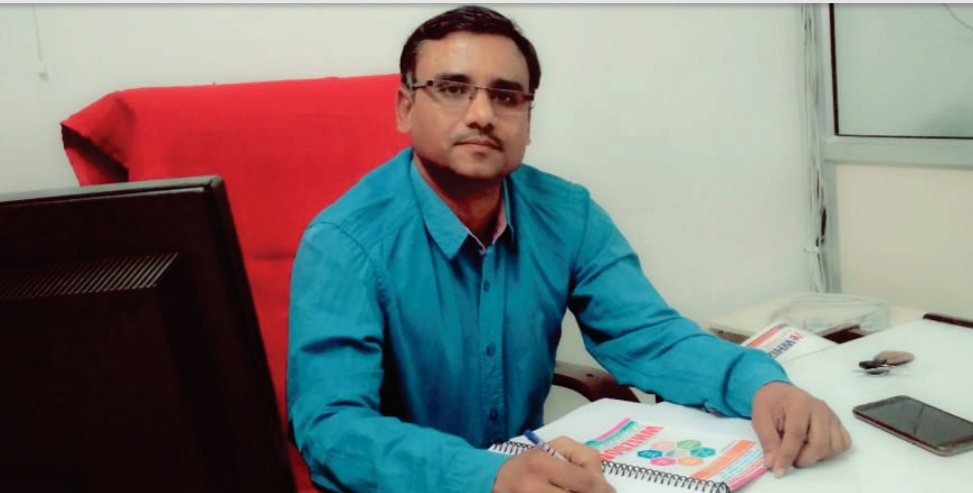

THE INSTITUE
WHIZDOM CLASSES is an institute engaged in the training for Pre-Foundation / Foundation / JEE Main - JEE Advance /AIIMS /NEET. The value system of the institute is based on truth and transparency in all the aspects.
BEST FACULTY
WHIZDOM CLASSES has a pool of great Gurus. A Guru is the one who imparts knowledge to the seeker. A guru can achieve the status of a renowned guru, when he possesses the right qualification, experience and competence. He is a person who takes keen interest in uplifting the skills of students and he drives pleasure in the success of his/ her students. The core competence of guru, his enthusiasm and his motivational skills will make him a top-notch subject expert. A person who provides a free learning environment and an open platform for dialogue between the seeker and the controller of the class, is worthy of being called a GURU, HE/She is a strong and a dependable individual, who give adequate time in the classroom to develop right "THINKING SKILLS" in the students. The GURU believes in the simple philosophy "take care of small things in life to accomplish big results". They believe that if the process is right, you will definitely achieve the desired end results.
Message from JPS Shikhawat(center head of whizdom classes)
Whizdom Classes is an institution with a vision of social welfare and search of section students to
provide complete and perfect guidance for the preparation of Pre-Foundation / Foundation / JEE /
NEET / AIIMS. Economically weaker section is given due consideration depending on their merit. Our
main aim and basic motive is to provide quality education by the most experienced and competent
gurus. The devoted approach and hard work with scientific methodology of our team will provide the
students all possible aids and inputs for grooming their career. We at Whizdom Classes will be more
than willing and pleased to offer scholarship and rewards to meritorious and successful students.
PATTERN PROOF STUDY MATERIAL
Study material is one of the best way to judge about the institute's claim of being best in imparting Education. You are advised to go through the content writing of the different institutes and then it will helps you to take a decision of joining the institution. We have written our study material with years of experience of teaching different types of students in different parts of the country . All new ideas and concepts of being developed by us become an integral part of our study material, Our study package id made pattern-proof, which implies, it is helpful in the current trend of JEE Advance & JEE Mains & NEET. It will also take care of any future changes of in the pattern of competitive examinations in our country
SALIENT FEATURES
STUDENT TESTING METHODOLOGY
The knowledge gained by the students has to be evaluated and accordingly upgraded. This can be done by regular progressive tests and phase tests comprising of CBSE pattern, JEE Mains, JEE Advance pattern, NEET pattern. The testing will be done at regular intervals to know the extent of knowledge assimilation by the student(s).